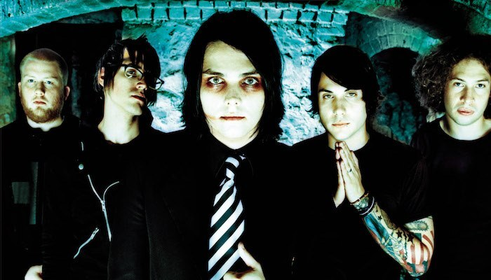
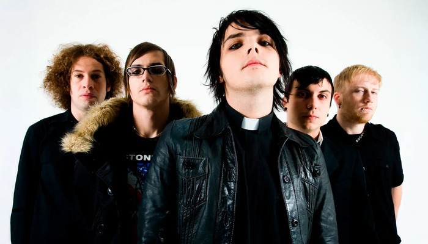
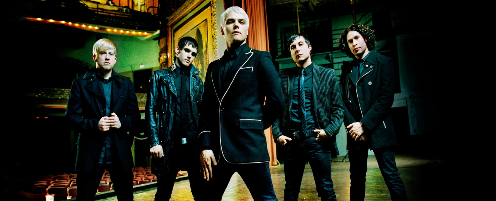
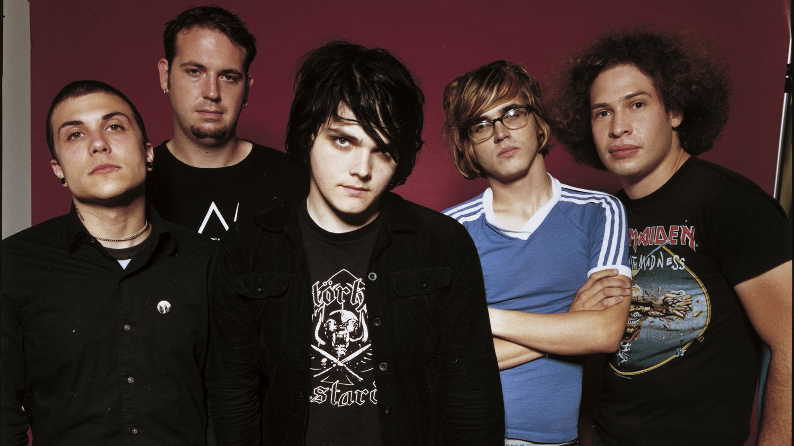
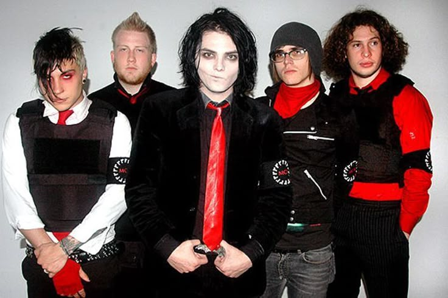
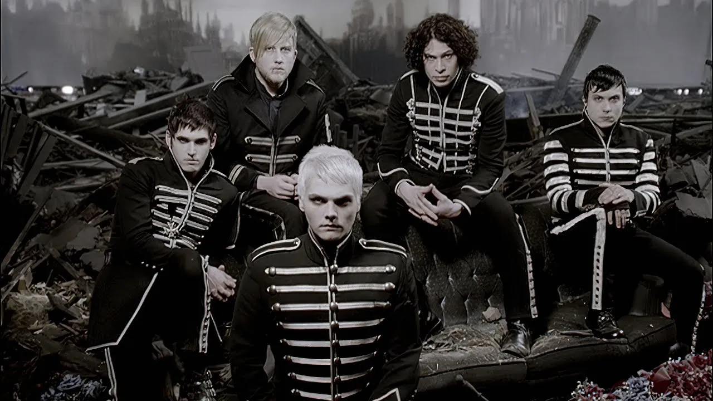

Era Revenge (2004)

La banda en 2005

The Black Parade (2006)

2007
Era de Danger Days

Su regreso en 2019

En esta pagina, vas a encontrar recomendaciones e informacion sobre My Chemical Romance
Empecé a escuchar esta banda hace varios meses, asi que voy a dar mi humilde opinion y conocimiento de un fan, no un experto

My Chemical Romance, también conocido oficialmente por sus siglas como MCR, es un cuarteto estadounidense de pop punk y post-hardcore, formado en 2001 en el estado de Nueva Jersey, e integrado en la mayor parte de su historia por el vocalista Gerard Way, el bajista Mikey Way y los guitarristas Ray Toro y Frank Iero; también Matt Pelissier y Bob Bryar fueron alguna vez los bateristas, y James Dewees el teclista. En marzo de 2013, la banda anunció su separación; aunque tras casi siete años de inactividad, el 31 de octubre de 2019 anunciaron su reunión para una gira mundial que comenzaron el 20 de diciembre siguiente en Los Ángeles (California). Su estilo musical ha sido asociado a los géneros rock, punk, pop punk, post-hardcore. Entre las influencias que han citado están diversos artistas como Queen, MC5, Misfits, Black Flag, The Beatles, Morrissey o Teenage Fanclub. La crítica, asimismo, ha dicho que la esencia de la banda recae en el drama, y que durante su carrera produjeron «un rock and roll de los más viscerales y dramáticos en la historia reciente».
Luego de firmar con la discográfica Eyeball Records, crearon en el año 2002 su álbum debut, I brought you my bullets, you brought me your love. Posteriormente se integraron a Reprise Records, y fue en 2004 cuando publicaron Three cheers for sweet revenge, disco que les dio la fama mundial con canciones como Helena, The Ghost of You o I'm Not Okay (I Promise). Su siguiente trabajo fue The Black Parade, de 2006, en el cual presentaron un sonido más elaborado, clásico y con influencias de los años setenta, en canciones como Welcome To The Black Parade o Teenagers. En 2010, después de haber grabado un disco completo y desecharlo, volvieron al estudio de grabación y publicaron su cuarto álbum, llamado Danger days: the true lives of the Fabulous Killjoys, cuyos primeros sencillos fueron Na Na Na y SING. Al momento de su disolución, en 2013, la banda trabajaba en un quinto álbum de estudio. En cuanto a la recepción de la crítica, The Black Parade obtuvo el puesto número 20 en la lista de los mejores álbumes de 2006 de la revista Rolling Stone y Danger days fue ubicado en el número 28 en la lista de 2010, de la misma publicación.
*I Brought You My Bullets, You Brought Me Your Love* es el álbum debut de My Chemical Romance y representa la etapa más cruda y oscura de la banda. Lanzado en 2002, el disco combina elementos del post-hardcore, punk y rock alternativo, con una producción mucho más agresiva y directa que la de sus trabajos posteriores. Las canciones exploran temas como la muerte, la pérdida, el amor, la violencia y las relaciones complicadas. Muchas de ellas presentan imágenes oscuras y una narrativa dramática, algo que rápidamente se convertiría en una de las características más reconocibles de MCR. También aparecen algunas de las primeras canciones que ayudaron a establecer la identidad de la banda, como "Vampires Will Never Hurt You" y "Headfirst for Halos". Aunque todavía no tiene un concepto tan definido como *The Black Parade* o *Danger Days*, el álbum ya muestra la intención de My Chemical Romance de contar historias a través de su música. Es un disco más agresivo y desordenado que los siguientes, pero justamente esa energía representa muy bien los comienzos de la banda.

*Three Cheers for Sweet Revenge* fue el segundo álbum de My Chemical Romance y uno de los discos que llevó a la banda a alcanzar una audiencia mucho más grande. Lanzado en 2004, mantiene parte de la energía del post-hardcore de su primer álbum, pero incorpora melodías más accesibles, estructuras más trabajadas y un sonido mucho más definido. El álbum presenta una historia relacionada con dos amantes que mueren y son separados. El protagonista recibe la oportunidad de volver a encontrarse con ella, pero para conseguirlo debe cumplir una misión relacionada con la muerte y la venganza. Esta narrativa aparece de diferentes maneras a lo largo del disco, aunque algunas canciones también funcionan como historias independientes. Además de su concepto, el álbum habla constantemente sobre relaciones, culpa, pérdida, violencia y obsesión. Canciones como "Helena", "I'm Not Okay (I Promise)" y "The Ghost of You" ayudaron a convertirlo en uno de los trabajos más importantes de la banda. *Three Cheers for Sweet Revenge* es también el disco donde empieza a aparecer con mayor claridad la identidad visual y teatral que posteriormente se convertiría en una parte fundamental de My Chemical Romance.

*The Black Parade* es el tercer álbum de estudio de My Chemical Romance y uno de los discos conceptuales más importantes de la banda. La historia sigue a un personaje conocido como "The Patient", quien se encuentra frente a su propia muerte y comienza a recordar diferentes momentos de su vida. A través de estas canciones, el álbum explora temas como la mortalidad, el miedo, los recuerdos, la soledad, el arrepentimiento y la manera en que una persona enfrenta la idea de morir. La muerte no aparece solamente como algo triste, sino también como una oportunidad para reflexionar sobre la vida y sobre lo que dejamos atrás. Musicalmente, el disco es mucho más ambicioso que los anteriores. Combina rock alternativo, punk, elementos de rock clásico y arreglos inspirados en el teatro y las bandas de marcha. Esta mezcla se puede escuchar en canciones como "Welcome to the Black Parade", "Famous Last Words" y "Teenagers". La estética del álbum también forma parte de su historia: la banda adopta la imagen de The Black Parade y construye un universo visual alrededor del disco. Por su concepto, su sonido y su impacto cultural, es considerado por muchos como la obra más representativa de My Chemical Romance.

*Danger Days: The True Lives of the Fabulous Killjoys* presenta un cambio enorme respecto a *The Black Parade*. Lanzado en 2010, el álbum abandona gran parte de la estética oscura y victoriana de su antecesor para crear un mundo futurista, colorido y lleno de referencias a la ciencia ficción, los cómics y la cultura postapocalíptica. La historia se desarrolla en el año 2019, en un futuro donde una corporación llamada Better Living Industries controla gran parte de la sociedad. Frente a ella aparecen los Killjoys, un grupo de rebeldes que vive fuera de las reglas de este sistema. Cada integrante de la banda adopta una identidad dentro de este universo y las canciones acompañan sus aventuras. Más allá de la historia, el álbum habla sobre la libertad, la individualidad, la rebeldía y la importancia de mantenerse fiel a uno mismo. Musicalmente también representa una transformación para MCR: tiene un sonido más electrónico, energético y colorido, con influencias de pop rock, punk y rock alternativo. El disco demuestra que My Chemical Romance no quería repetirse después del éxito de *The Black Parade*. En lugar de intentar hacer otra historia oscura, creó un universo completamente diferente y convirtió el álbum en una experiencia que combina música, personajes, estética y narrativa.
*Conventional Weapons* es una colección de canciones que My Chemical Romance había grabado durante una etapa anterior de la banda y que posteriormente fueron publicadas en cinco lanzamientos diferentes entre 2012 y 2013. Por esta razón, no funciona exactamente como un álbum conceptual tradicional. Las canciones fueron grabadas durante el proceso que llevó a la creación de *Danger Days*, pero representan una dirección musical diferente a la que finalmente tomó ese disco. El material tiene un sonido más cercano al rock y al punk de los trabajos anteriores de la banda, aunque también muestra algunas de las ideas que terminarían desarrollándose posteriormente. El proyecto permite conocer una parte de la evolución creativa de My Chemical Romance y escuchar canciones que podrían haber formado parte de una etapa diferente de la historia de la banda. Entre ellas se encuentran temas como "The World Is Ugly", "Boy Division", "The Light Behind Your Eyes" y "Surrender". Más que un álbum con una única historia, *Conventional Weapons* funciona como una colección de distintas ideas y canciones de una etapa de transición. También sirve para entender que el sonido de *Danger Days* no apareció de la nada, sino que fue el resultado de un proceso creativo en el que la banda probó diferentes caminos.
El 22 de marzo de 2013, tras doce años de trayectoria y cuatro álbumes de estudio, My Chemical Romance sorprendió a sus seguidores anunciando su separación oficial a través de un comunicado en su página web. En ese momento, la banda se encontraba trabajando en un quinto disco (conocido entre los fans como The Paper Kingdom), el cual nunca llegó a terminarse debido al desgaste creativo y personal que atravesaban sus integrantes.
Durante los casi siete años que duró la pausa, cada miembro siguió su propio camino artístico: Gerard Way lanzó su álbum solista Hesitant Alien y continuó su carrera como escritor de cómics (como The Umbrella Academy); Frank Iero formó varios proyectos musicales bajo distintas bandas; Ray Toro publicó música en solitario y Mikey Way formó el dúo Electric Century.
*May Death Never Stop You* es una recopilación publicada en 2014, poco después de que My Chemical Romance anunciara su separación. A diferencia de los demás discos de la banda, no contiene una nueva historia ni representa una etapa creativa completamente nueva, sino que reúne canciones de toda su trayectoria. La recopilación incluye algunos de los temas más conocidos de sus cuatro álbumes de estudio, permitiendo recorrer la evolución de My Chemical Romance desde el sonido crudo de *I Brought You My Bullets, You Brought Me Your Love* hasta el estilo más experimental de *Danger Days*. Además de las canciones más importantes de la banda, el lanzamiento incluye material adicional y canciones que no habían recibido el mismo tipo de lanzamiento anteriormente. Esto hace que el álbum funcione como una especie de cierre de la primera etapa de la historia de My Chemical Romance. Su título también adquiere un significado especial teniendo en cuenta el momento en que fue publicado: aunque la banda había decidido separarse, su música continuaría existiendo y llegando a nuevas generaciones. Años después, My Chemical Romance volvería a reunirse, haciendo que este álbum dejara de sentirse como un cierre definitivo.
Después de años de rumores y especulaciones, el 31 de octubre de 2019 (Halloween) la banda confirmó oficialmente su reunión bajo el lema "Return". El primer concierto tras la separación se realizó el 20 de diciembre de 2019 en el Shrine Expo Hall de Los Ángeles, con entradas agotadas en cuestión de minutos.
Aunque la pandemia de COVID-19 obligó a posponer la gira mundial planeada para 2020, el regreso a los escenarios finalmente se concretó en 2022 con una serie de conciertos multitudinarios en Europa, Norteamérica, Oceanía y Asia, demostrando que el impacto cultural de la banda seguía intacto.
The Foundations of Decay es un sencillo publicado por My Chemical Romance el 12 de mayo de 2022, convirtiéndose en su primer lanzamiento original en varios años. Su publicación marcó una nueva etapa para la banda después de su separación en 2013 y su posterior reunión. Musicalmente, la canción recupera algunos elementos oscuros y pesados de sus primeros trabajos, pero también presenta un sonido más experimental y atmosférico. Su duración y estructura la diferencian de muchos de los temas más conocidos de MCR. La letra aborda temas como el paso del tiempo, los errores del pasado, la decadencia y la dificultad de seguir adelante. También puede interpretarse como una reflexión sobre la historia de la propia banda y todo lo que atravesaron durante sus años de actividad y separación. El tema representa una especie de regreso a las raíces de My Chemical Romance, aunque con una identidad musical más madura y una perspectiva diferente.
My Chemical Romance es una banda bastante conocida, pero yo la empecé a escuchar hace poco más de un año. La verdad es que al escucharla por primera vez me atrapó al instante. Toda su estética, su sonido, sus letras, todo me llamó mucho la atención y se me hizo una banda muy especial. Me acuerdo muy bien el estar enganchadísimo con Helena, y de a poco fui descubriendo más y más temas hasta escuchar todos sus álbumes completos. Pero sobre todo, es una banda que sirve para ayudarte en momentos complicados gracias a las temáticas de sus canciones.
Es una canción muy linda que se destaca al diferenciarse de los demás temas de la banda, que suelen tener temáticas más oscuras, al ser una de las pocas canciones de amor. Gerard expresa vulnerabilidad e invita constantemente a huir juntos de los problemas del mundo ("You can run away with me / Anytime you want"), prometiendo quedarse y esperar todo lo que sea necesario.
Tema frenético y acelerado, con guitarras distorsionadas y una energía intensa que la hace uno de los puntos altos del álbum. Fuertes raíces en el post-hardcore y el emo, además de incluir cositas de punk rock y hard rock.
A diferencia de la canción anterior, esta tiene un sonido más melancólico y emocional, intercalando entre la tranquilidad de los versos con guitarras limpias y la catarsis de los estribillos potentes y distorsionadas.
Cierre "épico" de The Black Parade, más esperanzadora que contrasta con la mayoría del álbum, con un puente muy emocionante y para gritar con todo. Funciona como un himno de resistencia, supervivencia y determinación frente al dolor, la desesperación y el miedo a no poder seguir adelante.
Con una introducción acústica y lenta, tiene un estilo más reflexivo, de a poco siendo más
Obviamente con 5 temas me quedé corto, así que acá hay una lista con más de mis canciones favoritas:
El álbum más pop de su discografía y más divisivo para los fans, aunque sigue manteniendo la esencia de su rock alternativo. Con una temática más positiva que la oscuridad de los anteriores, aunque no sea mi favorito, sigue siendo un muy buen álbum, con puntos muy altos como "Na Na Na", "DESTROYA" y "S/C/A/R/E/C/R/O/W"
Su debut, siendo el álbum más crudo tanto emocionalmente como en sonido. Guitarras agresivas, letras oscuras, melodías melancólicas y un tono dramático que influyó en el emo de principios de los 2000. Post-hardcore y emo, con influencias de punk rock, pop-punk y horror punk. Tiene temazos como "Vampires Will Never Hurt You", "Honey, This Mirror Isn't Big Enough for the Two of Us", "Early Sunsets Over Monroeville" y "Drowning Lessons".
Considerado por muchos como su mejor álbum, con una trama que se desarrolla a lo largo de su duración. Cuenta la historia de un paciente terminal de cáncer ("el Paciente") y su tránsito hacia la muerte y el más allá, con una narrativa teatral y de gran escala. Marcando a toda una generación, es su obra más ambiciosa LEJOS, tranquilamente podría ser una obra de teatro. Un temazo tras otro: "Dead!", "Welcome to the Black Parade", "I Don't Love You", y los ya mencionados anteriormente.
Mi favorito, el primero que escuché completo y con el que me enamoré de la banda. Simplemente me encanta su sonido y la energía de este, con fuertes influencias del punk rock y el post-hardcore. Creo que sus canciones más icónicas están acá: "Helena", "I'm Not Okay (I Promise)" y "The Ghost of You", además de "Thank You for the Venom", "Give 'Em Hell, Kid" y "It's Not a Fashion Statement, It's a Deathwish", de mis favoritas.



A lo largo de su historia, My Chemical Romance no estuvo exento de problemas en el mundo digital. Después de Danger Days, la banda comenzó a trabajar en un quinto álbum de estudio conocido como The Paper Kingdom, también llamado por los fans "MCR5". Sin embargo, el proyecto fue abandonado antes de su publicación y la banda terminó separándose en 2013. Durante los años siguientes, diferentes canciones y fragmentos de las grabaciones comenzaron a circular por internet sin autorización. Este caso permite observar un problema que también existe fuera de la industria musical: las filtraciones de información digital.
Si querés saber más sobre seguridad informática y cómo evitar caer en estas trampas al navegar, acá están los conceptos clave:
Es el conjunto de prácticas, herramientas y medidas diseñadas para proteger sistemas, redes y archivos frente a accesos no autorizados, robos o daños. Su objetivo principal es garantizar la confidencialidad (que solo acceda quien tiene permiso), la integridad (que nadie altere los archivos) y la disponibilidad de la información.
Proviene de malicious software (software malicioso). Es un término general que engloba a cualquier programa creado para infiltrarse o dañar una computadora sin el consentimiento del usuario. Incluye amenazas como troyanos (que se disfrazan de descargas legítimas, como supuestos discos filtrados), spyware (que espía lo que hacés) y ransomware (que secuestra tus archivos y pide dinero).
Son un tipo específico de malware que necesita de un archivo anfitrión (como un .exe o un archivo comprimido) para ejecutarse. Una vez que el usuario lo abre, el virus se replica, infecta otros archivos del sistema y puede ralentizar la PC, borrar información o abrir puertas traseras para atacantes.
Consiste en resguardar información privada como contraseñas, correos electrónicos, documentos o datos bancarios. Para protegerse es fundamental usar contraseñas seguras y distintas en cada sitio, activar la verificación en dos pasos (2FA), evitar enlaces sospechosos (phishing) y descargar contenido únicamente desde plataformas oficiales.